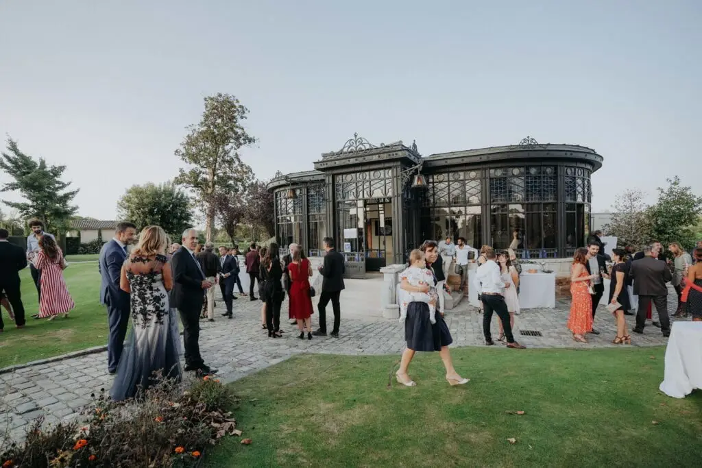
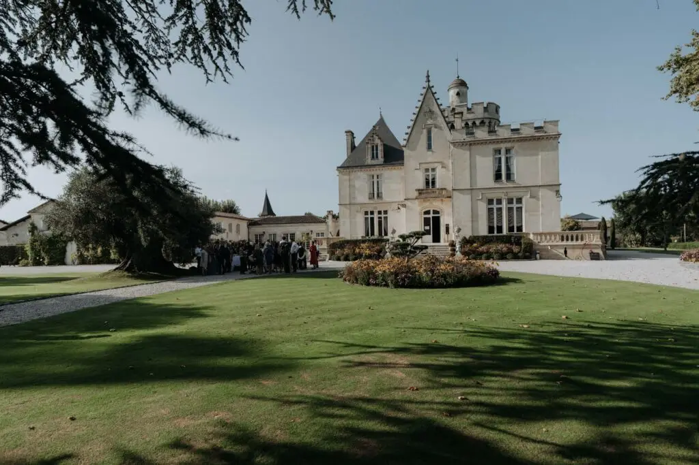
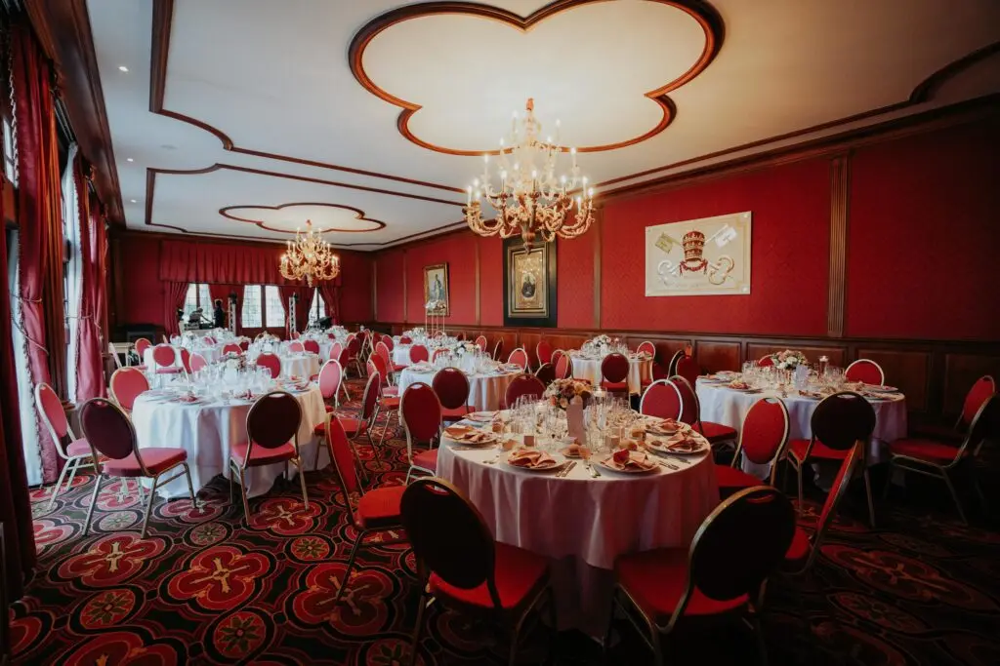

Mariage dans un Château Bordelais
Ils ont fait confiance à Lovely Day Event, wedding planner haut de gamme, pour faire de leur rêve une réalité, fêter leur mariage dans un château Bordelais.
L’amour reflète dans leurs yeux ! Laissez vous porter dans cette union de luxe !
Si vous aussi vous rêvez d’un mariage princier dans un lieu prestigieux, n’hésitez pas à me contacter. J’interviens régulièrement pour des mariages dans des châteaux, des manoirs et des grands domaines de la région de Bordeaux.
De la coordination des prestataires à l’aspect scénographie de la décoration, les mariés se sont dit « oui » dans un des plus beaux lieux de Gironde : le Château Grattequina à Blanquefort, en région bordelaise.
Les festivités ont duré 3 jours avec ces 300 invités tous très élégants. Un vrai mariage de princesse !
Les vieilles pierres ont été magnifiées par un jeu de lumière qui apporte de la modernité dans ce cadre. Un contraste saisissant. De plus, la qualité des prestataires (le traiteur, le DJ, le saxophoniste, le barman, le photographe, la fleuriste, les animateurs enfants, le groupe de jazz, la location de voiture…) a su créer l’univers parfait à leur personnalité.
Je vous informe dès à présent sur mes diverses prestations dans le domaine de l’événementiel.



Lovely Day Event c'est plusieurs types de prestations
L'organisation de mariage
Je vais intervenir sur toutes les étapes de vos préparatifs et vous guider dans vos choix. Je suis force de proposition pour que votre mariage ne ressemble qu’à vous.
Coordination le jour J
Je serai le chef d’orchestre pour gérer les différents prestataires, la mise en place de votre décoration et le déroulement de cette belle journée.
Décoration de mariage
Créative et passionnée, je suis certifiée Wedding Designer et je conçois une ambiance scénographique qui correspond au thème de votre mariage. La décoration est comprise dans l'accompagnement Signature, ou proposée en option avec la coordination du jour J.